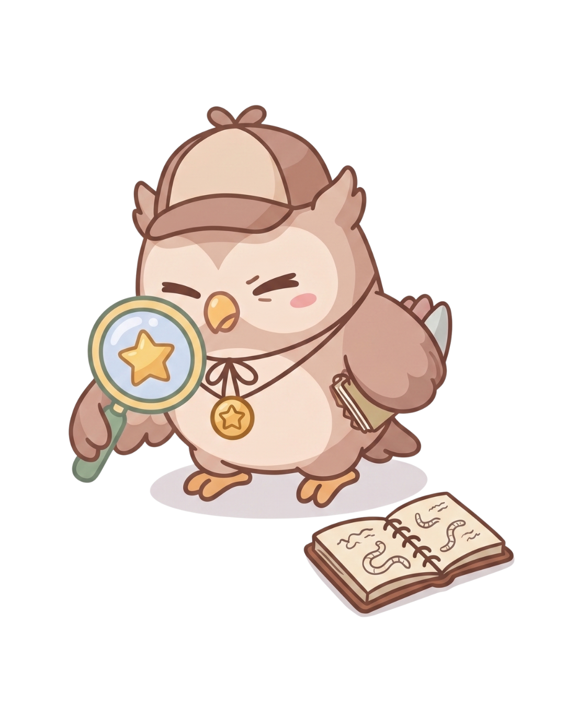

Giliran Player 1
Hati-hati. Setiap membuka pertanyaan, bendera akan bergerak 1 kotak ke arah robot.
Prebunking Board Game
TUG OF
FACTS

Dibuat oleh Gilang Adikara sebagai proyek untuk Australia Awards Indonesia Short Course on The Challenge of Mis- and Disinformation.
Benar atau Salah?
Kamu Benar!
Kategori
Fakta Sebenarnya:
✨ ACTION CARD ✨
Rarity
🃏
Nama Kartu
Narasi kartu muncul di sini.
Efek Langkah:
+2 langkah ke arahmu
SELAMAT!
Selamat, Kamu Menang!
SKOR AKHIR:
0
Detektif Sejati
"Kamu jago melacak fakta dan punya keberuntungan yang bagus"